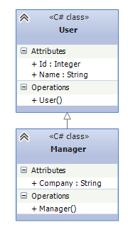
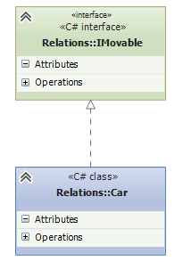
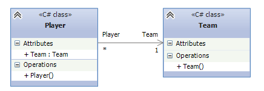
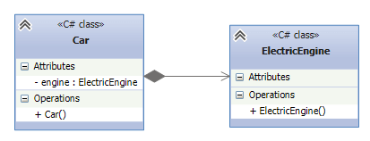
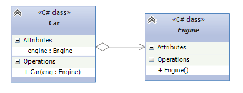

Отношения между классами и объектами
Прежде чем приступить к изучению основных паттернов также рассмотрим основные отношения между объектами, которые помогут нам понять связи между сущностями при их использовании в паттернах. Мы можем выделить несколько основных отношений: наследование, реализация, ассоциация, композиция и агрегация.
Наследование является базовым принципом ООП и позволяет одному классу (наследнику) унаследовать функционал другого класса (родительского). Нередко отношения наследования еще называют генерализацией или обобщением. Наследование определяет отношение IS A, то есть "является". Например:
class User
{
public int Id { get; set; }
public string Name { get; set; }
}
class Manager : User
{
public string Company{ get; set; }
}
В данном случае используется наследование, а объекты класса Manager также являются и объектами класса User.
С помощью диаграмм UML отношение между классами выражается в незакрашенной стрелочке от класса-наследника к классу-родителю:

Реализация
Реализация предполагает определение интерфейса и его реализация в классах. Например, имеется интерфейс IMovable с методом Move, который реализуется в классе Car:
public interface IMovable
{
void Move();
}
public class Car : IMovable
{
public void Move()
{
Console.WriteLine("Машина едет");
}
}
С помощью диаграмм UML отношение реализации также выражается в незакрашенной стрелочке от класса к интерфейсу, только линия теперь пунктирная:

Ассоциация - это отношение, при котором объекты одного типа неким образом связаны с объектами другого типа. Например, объект одного типа содержит или использует объект другого типа. Например, игрок играет в определенной команде:
class Team
{
}
class Player
{
public Team Team { get; set; }
}
Класс Player связан отношением ассоциации с класом Team. На схемах UML ассоциация обозначается в виде обычно стрелки:

Нередко при отношении ассоциации указывается кратность связей. В данном случае единица у Team и звездочка у Player на диаграмме отражает связь 1 ко многим. То есть одна команда будет соответствовать многим игрокам.
Агрегация и композиция являются частными случаями ассоциации.
Композиция определяет отношение HAS A, то есть отношение "имеет". Например, в класс автомобиля содержит объект класса электрического двигателя:
public class ElectricEngine
{ }
public class Car
{
ElectricEngine engine;
public Car()
{
engine = new ElectricEngine();
}
}
При этом класс автомобиля полностью управляет жизненным циклом объекта двигателя. При уничтожении объекта автомобиля в области памяти вместе с ним будет уничтожен и объект двигателя. И в этом плане объект автомобиля является главным, а объект двигателя - зависимой.
На диаграммах UML отношение композиции проявляется в обычной стрелке от главной сущности к зависимой, при этом со стороны главной сущности, которая содержит, объект второй сущности, располагается закрашенный ромбик:

От композиции следует отличать агрегацию. Она также предполагает отношение HAS A, но реализуется она иначе:
public abstract class Engine
{ }
public class Car
{
Engine engine;
public Car(Engine eng)
{
engine = eng;
}
}
При агрегации реализуется слабая связь, то есть в данном случае объекты Car и Engine будут равноправны. В конструктор Car передается ссылка на уже имеющийся объект Engine. И, как правило, определяется ссылка не на конкретный класс, а на абстрактный класс или интерфейс, что увеличивает гибкость программы.
Отношение агрегации на диаграммах UML отображается также, как и отношение композиции, только теперь ромбик будет незакрашенным:

При проектировании отношений между классами надо учитывать некоторые общие рекомендации. В частности, вместо наследования следует предпочитать композицию. При наследовании весь функционал класса-наследника жестко определен на этапе компиляции. И во время выполнения программы мы не можем его динамически переопределить. А класс-наследник не всегда может переопределить код, который определен в родительском классе. Композиция же позволяет динамически определять поведение объекта во время выполнения, и поэтому является более гибкой.
Вместо композиции следует предпочитать агрегацию, как более гибкий способ связи компонентов. В то же время не всегда агрегация уместна. Например, у нас есть класс человека, который содержит объект нервной системы. Понятно, что в реальности, по крайней мере на текущий момент, невозможно вовне определить нервную систему и внедрить ее в человека. То есть в данном случае человек будет главным компонентом, а нервная система - зависимым, подчиненным, и их создание и жизненный цикл будет происходить совместно, поэтому здесь лучше выбрать композицию.
Created with the Personal Edition of HelpNDoc: Easily create CHM Help documents